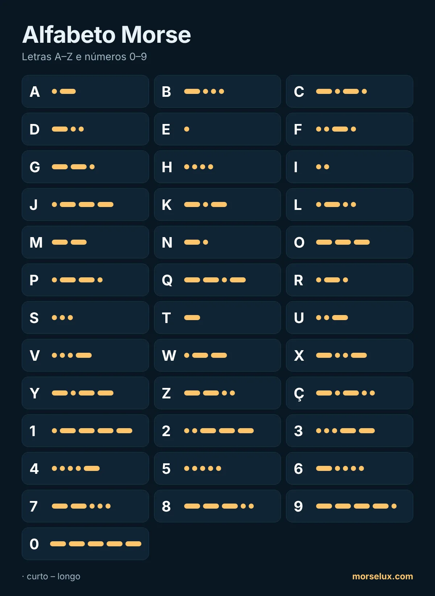

- Ouça, não conte. Na velocidade real não dá para contar pontos e traços; cada letra é um padrão de som.
- Opostos ajudam: A (·–) e N (–·), D (–··) e U (··–), G (––·) e W (·––) são espelhados.
- Pratique em sessões curtas. Dez a quinze minutos por dia rendem mais que uma sessão longa por semana.
- Use. Digite uma palavra no tradutor de código Morse e tente ouvir as letras antes de ler.
MorseLux › Alfabeto
·–·· ··– –··– Tabela · toque para ouvir
Alfabeto Morse
Todas as letras, números e sinais de pontuação do código Morse internacional. Toque em um sinal para ouvir como ele soa – é assim que se aprende Morse de verdade.
Letras A–Z
Números em código Morse (0–9)
Os números sempre têm cinco sinais, o que facilita aprender: de 1 a 5 começam com pontos, de 6 a 0 com traços.

Sinais de pontuação
| Sinal | Morse | Ouvir |
|---|---|---|
| . | ·–·–·– | |
| , | ––··–– | |
| ? | ··––·· | |
| ' | ·––––· | |
| ! | –·–·–– | |
| / | –··–· | |
| ( | –·––· | |
| ) | –·––·– | |
| & | ·–··· | |
| : | –––··· | |
| ; | –·–·–· | |
| = | –···– | |
| + | ·–·–· | |
| - | –····– | |
| _ | ··––·– | |
| " | ·–··–· | |
| $ | ···–··– | |
| @ | ·––·–· |
Letras especiais (Ç, É, Ñ, Ä…)
Estas letras fazem parte do código Morse estendido usado em alguns idiomas. Letras com acento do português (Á, Ã, Õ, Ê…) são enviadas como a letra simples, sem acento.
| Sinal | Morse | Ouvir |
|---|---|---|
| Ä | ·–·– | |
| Ö | –––· | |
| Ü | ··–– | |
| ß | ···––·· | |
| Ñ | ––·–– | |
| É | ··–·· | |
| À | ·––·– | |
| È | ·–··– | |
| Ç | –·–·· | |
| Ğ | ––·–· | |
| Ş | ·––·· |
Dicas para aprender o alfabeto
Perguntas frequentes
Quantos sinais tem o alfabeto Morse?
O código Morse internacional tem sinais para as 26 letras A–Z, os dez algarismos 0–9 e os sinais de pontuação mais comuns. Alguns idiomas acrescentam letras próprias, como o Ç ou o Ñ.
Como se escreve o Ç e as letras com acento em Morse?
O Ç tem um sinal próprio (–·–··). Letras com acento como Á, Ã, É ou Õ normalmente são enviadas sem o acento: A, A, E, O.
Posso imprimir o alfabeto Morse?
Sim. Use o botão «Baixar PDF» no topo da página: é uma folha A4 clara, boa para a sala de aula ou o grupo escoteiro.
Qual é a letra mais curta e a mais longa?
As mais curtas são E (·) e T (–). Entre as letras, as mais longas têm quatro sinais, como Q (––·–) e Y (–·––); os números têm sempre cinco.